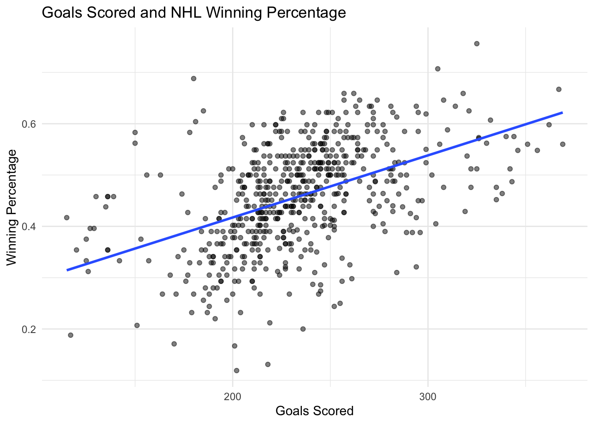
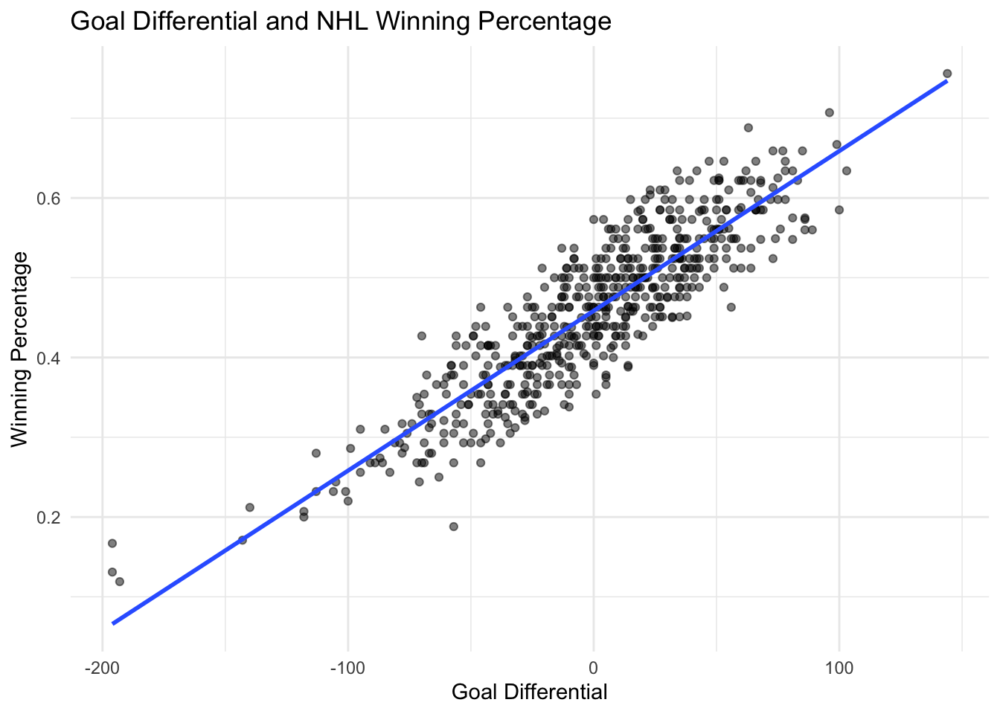

Do Teams That Score More Goals Win More Games in the NHL?
web-scraping
sports
data-analysis
Author
Rui Bao
Published
September 21, 2026
Introduction
When looking at a hockey team’s performance, one of the first statistics people notice is how many goals the team scores. It seems reasonable to think that teams that score more goals should also win more games. But scoring is only one side of the game. A team can score a lot and still give up just as many goals.
This made me interested in a simple question: Does scoring more goals actually lead to a higher winning percentage in the NHL? I also wanted to see whether goal differential, which takes both scoring and goals allowed into account, gives us a better picture of team performance.
To answer this question, I used rvest in R to scrape historical NHL team statistics from Scrape This Site. The site is a public web-scraping sandbox, so the data can be accessed without a login, CAPTCHA, or paywall.
Scraping the Data
The hockey data are spread across multiple pages. Instead of copying the tables manually, I created a function that reads each page and extracts the team statistics.
I added a short pause between page requests so that the website is not being requested too quickly.
Cleaning the Data
The information collected from the website is initially stored as text. Before doing any calculations, I converted the numerical columns into numbers. I also created a new variable called goal_diff, which is goals scored minus goals allowed.
A positive goal differential means that a team scored more goals than it allowed during that season, while a negative number means the opposite.
Goals Scored and Winning Percentage
First, I compared total goals scored with winning percentage.
ggplot(hockey, aes(x = goals_for, y = win_pct)) +geom_point(alpha =0.5) +geom_smooth(method ="lm", se =FALSE) +labs(title ="Goals Scored and NHL Winning Percentage",x ="Goals Scored",y ="Winning Percentage" ) +theme_minimal()
`geom_smooth()` using formula = 'y ~ x'

The graph shows a positive relationship between scoring and winning percentage. Teams that score more goals generally tend to win a larger share of their games. However, the points are fairly spread out around the trend line. Teams with similar numbers of goals can still have noticeably different winning percentages.
This makes sense because goals scored ignore what happens on defense. Scoring 250 goals is much less impressive if a team also allows 260.
Is Goal Differential More Useful?
Next, I compared goal differential with winning percentage.
ggplot(hockey, aes(x = goal_diff, y = win_pct)) +geom_point(alpha =0.5) +geom_smooth(method ="lm", se =FALSE) +labs(title ="Goal Differential and NHL Winning Percentage",x ="Goal Differential",y ="Winning Percentage" ) +theme_minimal()
`geom_smooth()` using formula = 'y ~ x'

The relationship here is much clearer. Teams with large positive goal differentials tend to have higher winning percentages, while teams that allow substantially more goals than they score tend to have lower winning percentages.
To make the comparison more direct, I calculated the correlations between the two measures and winning percentage.
The correlation values give a simple way to compare the two relationships. A larger positive correlation means that the statistic moves more closely with winning percentage.In this dataset, the correlation between goals scored and winning percentage is about 0.48, while the correlation between goal differential and winning percentage is about 0.89. This suggests that goal differential is much more closely associated with winning percentage than scoring alone.
A Practical Example
To see what successful seasons tend to look like, I also looked at the team-seasons with the highest winning percentages in the scraped data.
# A tibble: 10 × 8
team year wins losses win_pct goals_for goals_against goal_diff
<chr> <dbl> <dbl> <dbl> <dbl> <dbl> <dbl> <dbl>
1 Detroit Red Win… 1995 62 13 0.756 325 181 144
2 Detroit Red Win… 2005 58 16 0.707 305 209 96
3 Detroit Red Win… 1994 33 11 0.688 180 117 63
4 Pittsburgh Peng… 1992 56 21 0.667 367 268 99
5 Detroit Red Win… 2007 54 21 0.659 257 184 73
6 Washington Capi… 2009 54 15 0.659 318 233 85
7 Vancouver Canuc… 2010 54 19 0.659 262 185 77
8 Dallas Stars 2005 53 23 0.646 265 218 47
9 Buffalo Sabres 2006 53 22 0.646 308 242 66
10 Boston Bruins 2008 53 19 0.646 274 196 78
This table makes it possible to look beyond scoring alone. A high-performing team does not simply need to produce goals; the difference between goals scored and goals allowed is also important.
Takeaway
The scraped NHL data support the basic idea that scoring more goals is associated with winning more games, but goals scored alone do not tell the whole story. Goal differential gives a more complete measure because it includes both offense and defense.
If I wanted to quickly compare two NHL teams based on a small number of statistics, I would look at goal differential before looking only at total goals scored. A team that scores frequently but also allows many goals may not perform as well as its offensive numbers initially suggest.
This does not mean goal differential explains everything about winning. Team quality also depends on factors such as goaltending, special teams, injuries, and the strength of opponents. In addition, this is a descriptive analysis, so the relationship should not be interpreted as proof that increasing goal differential by a certain amount directly causes a specific increase in winning percentage.
Still, the analysis gives a useful practical rule: when evaluating overall team performance, considering both sides of scoring provides more information than focusing on offense alone. Web scraping made it possible to collect the historical team statistics across many pages and turn them into a dataset that can answer this question directly.